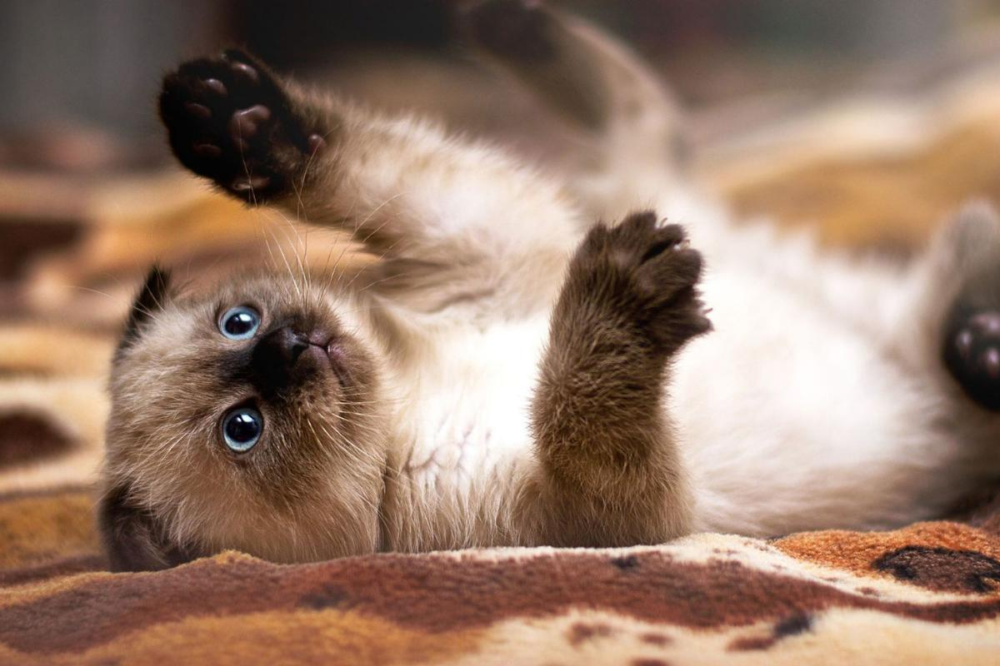

Van turco
De pelaje mullido y algodonoso, mirada cautivadora y carácter sociable, los gatos van turco presentan muchas características que les hacen únicos y especialmente deseados
Siames
El gato siamés probablemente sea una de las razas de gatos más populares del mundo actual. El azul intenso de su mirada hace que nos quedemos embobados mirándolo y, si a eso le sumamos la combinación de colores en su pelaje, el resultado es un esbelto, elegante y adorable gato que nos roba el corazón. El gato siamés se trata de un felino originario de Tailandia que cuenta con dos variaciones, el siamés que trataremos, y el siamés thai o tradicional.
Bengala
El gato de Bengala o gato bengalí es un híbrido que nace entre el cruce un gato doméstico y un gato leopardo (felino asiático que aún se encuentra en estado salvaje), por ese motivo muchas personas se preguntan hoy en día si el gato de Bengala es un felino salvaje.
Angora

Provenientes de la lejana Turquía, los gatos de angora son una de las razas felinas más antiguas del mundo. Los gatos angora turcos frecuentemente son confundidos con otras razas de pelo largo como los persas, ya que ambas razas gozan de una notoria popularidad, sin embargo, presentan diferencias que veremos a continuación.